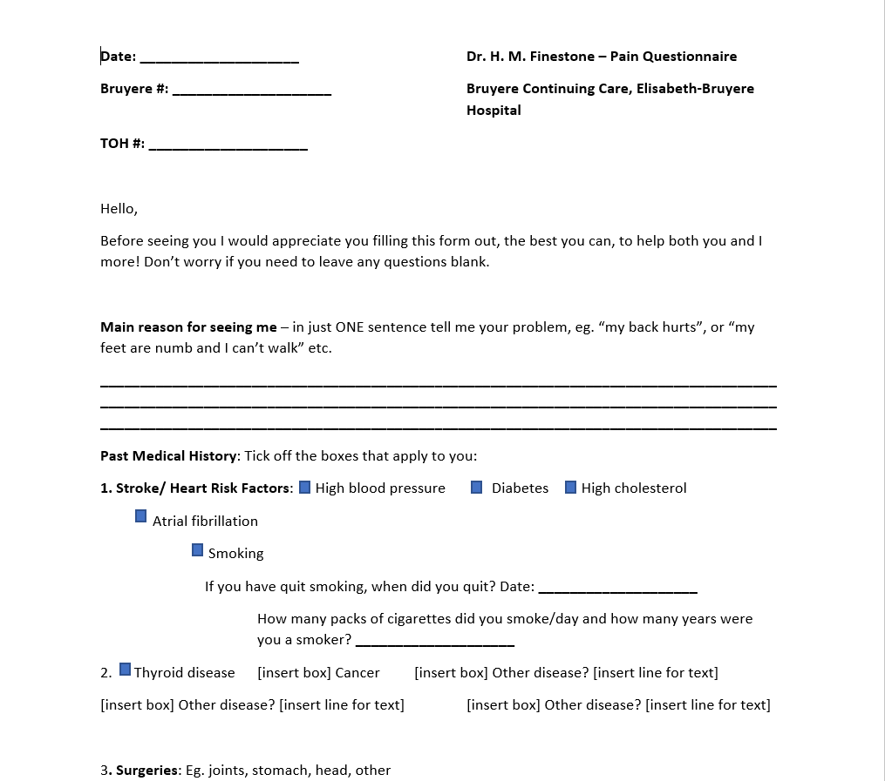
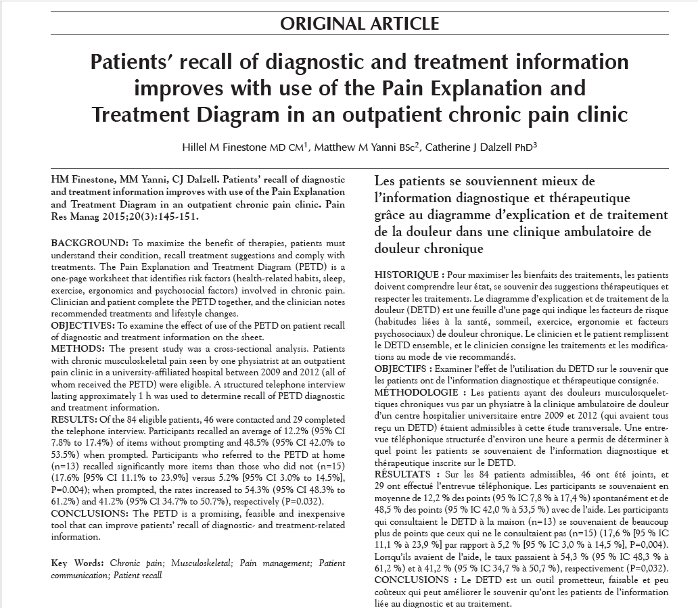
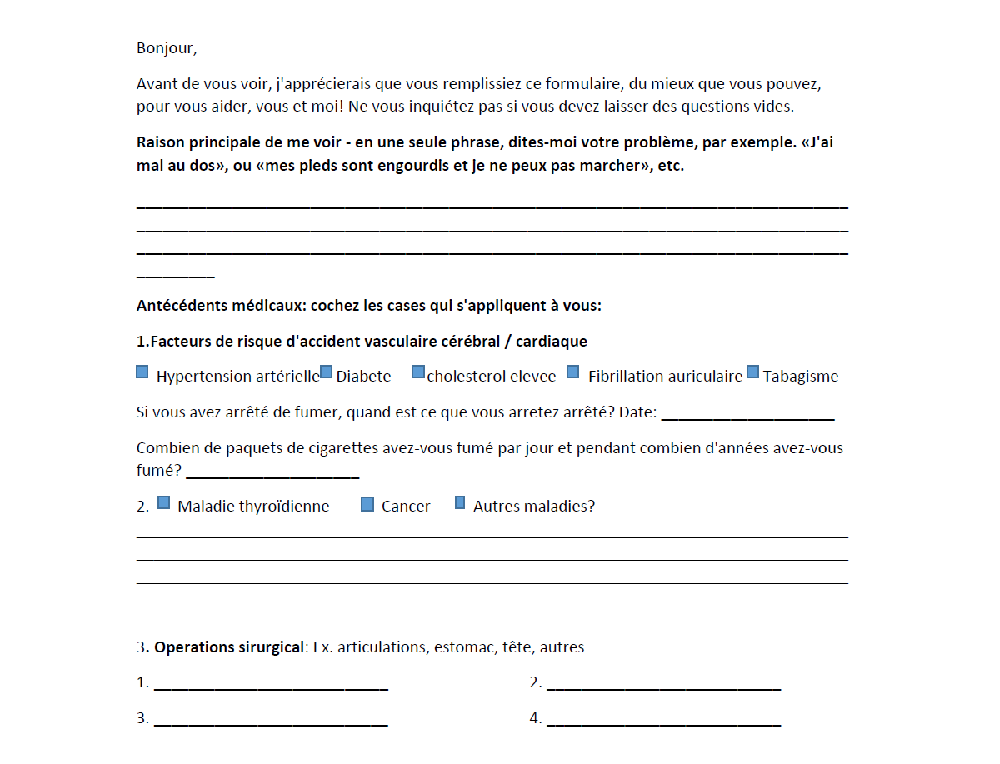

Both patient and doctor fill this form. The patient asks himself
"what are my pain risk factors? and then identifies them with the help of this form."
The doctor will then be able to provide the diagnosis and appropriate treatment.
Patients fill this form ahead of visit and email it to their doctor.
More help on how to effectively use the Pain Risk Factor Diagrm for doctors.
Both patient and doctor fill this form. The patient asks himself
"what are my pain risk factors? and then identifies them with the help of this form."
The doctor will then be able to provide the diagnosis and appropriate treatment.
Patients fill this form ahead of visit and email it to their doctor.
